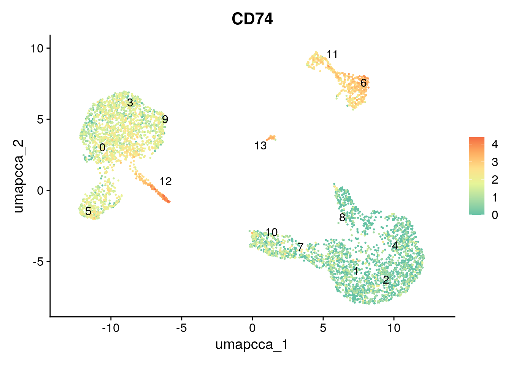
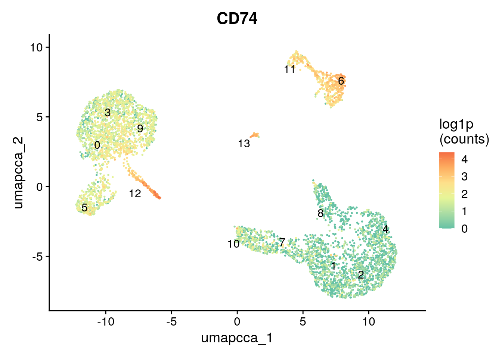
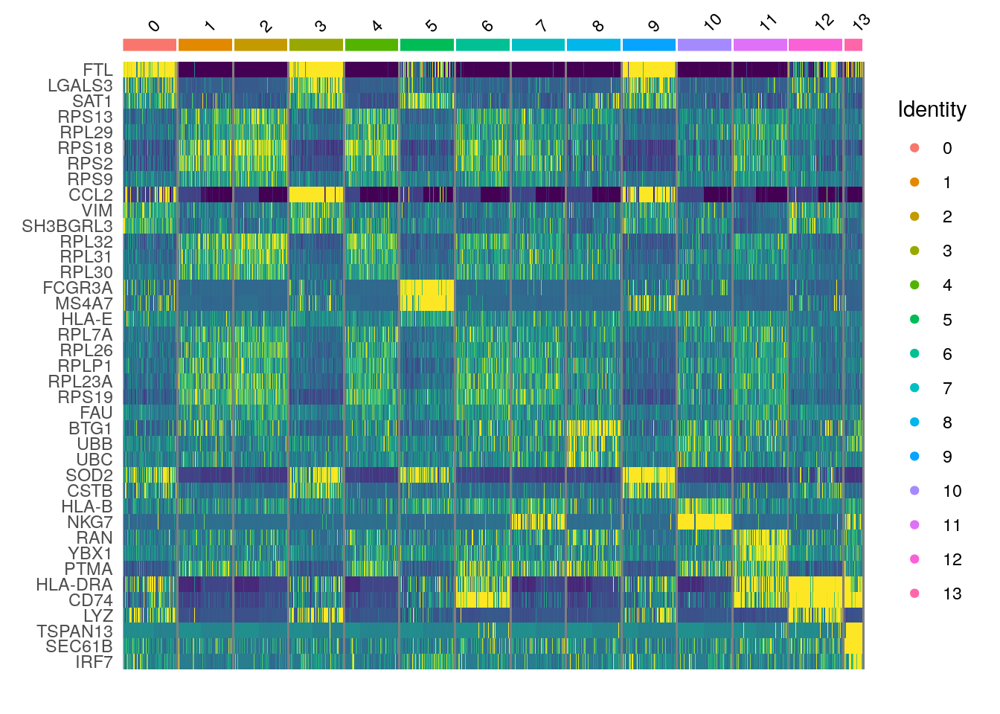
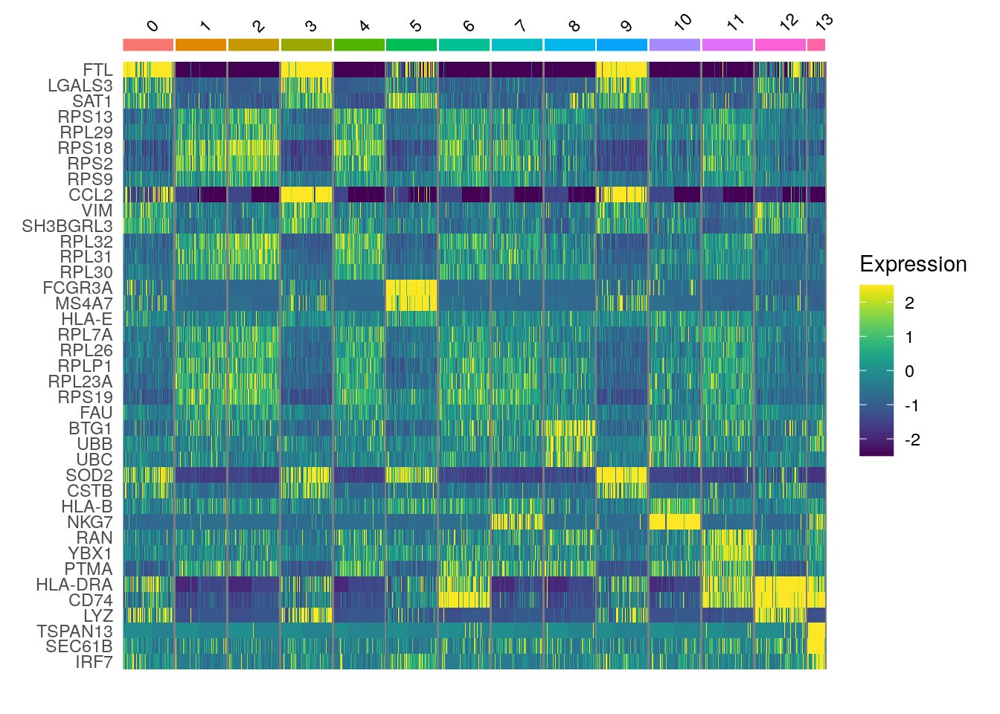

.libPaths(c('/usr/local/lib/R/site-library', '/usr/local/lib/R/library'))DSCoV Single Cell
scRNAseq analysis with Seurat
To use this notebook
- Go to ood.ccv.brown.edu (you will need an Oscar account).
- Go to ‘Clusters’ in the blue menu bar at the top and click the drop-down that says ‘>_OSCAR Shell Access’
- Go to your home folder and make a folder called
dscov_singlecell_2024(cd ~andmkdir scrna_r_workshop_2023), then typepwdto get the path to this folder. - Look under
Interactive Appsin the blue menu bar and click onRStudio on SingularityunderExpert GUIs.
Fill in the fields as follows:
Account: leave blank
Partition: leave blank
Number of hours: 3
Num Cores: 8
Memory: 90
Singularity Container Path: /gpfs/data/shared/databases/workshops/bootcamp_2023/scrna_r_workshop.sif
Package install Path: leave blank
Path for R Executable: This should be the full path to thescrna_r_workshop_2023you made in step 3.
R Module: leave blank
Additional Data Path: /gpfs/data/shared/databases/workshops/bootcamp_2023/scrna_r_workshop
Once your job starts, click the button to connect to session.
At the top of the screen you’ll see a menu bar that starts with ‘file’, click on ‘file’ and ‘open file’.
Open the Rproj file.
Introduction to scRNA-seq
Much of this notebook is adapted from the Seurat vignettes https://satijalab.org/seurat and GitHub repository https://github.com/satijalab/seurat
How does scRNAseq differ from bulk RNA-seq? In bulk RNA-seq you are taking a snapshot of expression of all the cells in a sample and your measurements are aggregated across all of those cells. In scRNAseq, you can get a sense of the heterogeneity of the cells in your sample. Are there novel or rare cell types? What about cell type specific gene expression? Does the distribution of different cell types change across time or treatment? This increased resolution comes with some unique challenges:
- Dropouts - genes that are not detected in some cells, can lead to sparse expression matrices with many zero values.
- Doublets - sequencing two cells at the same time and can't distinguish their expression or cell types, need to filter these out during QC.
- Dying cells - you will lose some cells because they are dead or dying, you can also filter these out during sample QC.
- You also should be cautious when thinking about your sample sizes. For example, you may be sequencing thousands of cells but if they all come from the same mouse you lose the ability to generalize your findings.Seurat objects overview
Important
In November of 2023, Seurat made a major upgrade to Seurat v5 (https://github.com/satijalab/seurat/releases), which included many new functions and other changes (https://satijalab.org/seurat/articles/announcements.html#changes-in-seurat-v5), including some very big changes to the default behavior of Seurat. You will likely see different results depending on which version of Seurat you have used for your analysis. Feel free to come to our office hours if you want help setting up reproducible analyses using either version of Seurat.
This workshop focuses on using Seurat objects to structure your scRNA-seq data (https://github.com/satijalab/seurat/wiki/Seurat), we will attempt to cover how to interact with Seurat objects in Seurat v4 and v5, but won’t exhaustively cover the differences between the two versions.
Here’s a schematic of a Seurat object:

- Each Seurat object is composed of different components:
assaysis a list of all the assays in the object.Defaults to
RNAassay, but you can add others (likeSCTfor normalizd counts, shown in the figure above, could also be antibody-derived tags, etc.).You can see all assays using
Assays(ifnb), see which assay is the currently active assay by looking in theactive.assayslot (ifnb@active.assay) and switch between them using theDefaultAssay()function (DefaultAssay(ifnb) <- 'RNA').Each assay will store multiple transformations of the data in different
slots(orlayersin Seurat v5) – in the case ofRNAdata these slots are:@countscontains the raw counts.@datacontains the normalized counts.@scale.datacontains the scaled data for dimensional reduction.
The
slots(Seurat v4) orlayers(Seurat v5) store the data as a sparse matrix where the rows are gene and the columns are cells.In Seurat v4, you could access the raw counts like this:
GetAssayData(ifnb, assay="RNA", slot='counts'). This will still work in Seurat v5, but you’ll get a warning message. In Seurat v5 it is intended that you access the counts using theLayerDatafunction, like this:LayerData(ifnb, assay='RNA', layer='counts')In either version of Seurat
ifnb[['RNA']]$countswill also work.
meta.datais a matrix of all the cell-level metadata.- This will include information about which condition, timepoint, batch, etc. a for a given cell.
- It also includes metrics that will be relevant for QC, like
nCount_RNAandnFeature_RNAnCount_RNAis the total number of molecules (UMIs) detected within a cell.nFeature_RNAis the total number of genes detected within a cell.
- Once you have completed clustering, you’ll also see information about which cluster each cell has been assigned to.
- The different categories or columns in the
meta.dataare also calledIdentsin Seurat. - You can see the current
Identin theactive.identslot (ifnb@active.ident) and switch between them using theIdents()function (this will probably be important for running differential expression testing). - You can use
table(Idents(ifnb))for a quick summary of the number of cells in each grouping.
graphsis a list of the nearest neighbor graphs.- The objects stored in
graphsare cell x cell matrices containing the neighborhood overlap (Jaccard index) between every cell and its nearest neighbors.
- The objects stored in
reductionsis a list ofDimReducobjects.versioncontains information about which version of Seurat was used to make the object.- There are other optional slots, including
toolsandmiscthat can be populated by specific analysis tools (tools) or users can store their own additional information (misc).
Parallelization options for Seurat and other packages
First, we can set the .libPaths(), which essentially tells R that it should look for packages inside these locations inside the Singularity container.
All of the methods we are discussing here involve computationally heavy methods, and as such also take advantage of parallelization where they can. Often in their documentation you will find how to use multiple cores when calling a function, usually involving a provided a rgument or involving a package called future. For example, Seurat has a vignette on parallelization with future. We will follow it here:
library(future)
# check the current active plan
plan()sequential:
- args: function (..., envir = parent.frame())
- tweaked: FALSE
- call: NULLplan() says that we are currently set up to run code sequentially or non-parallelized. To see more information, run this code chunk:
?future::planNow, we set workers=8 because we’ve requested 8 cores. Additionally, we set multisession instead of multiprocess despite what the vignette says, because multiprocess is actually deprecated in future and we should be explicitly specifying multisession or multico re instead. Getting into the difference is out of scope of this workshop, but you can read more on future yourself if interested.
# change the current plan to access parallelization
plan("multisession", workers = 4)
plan()multisession:
- args: function (..., workers = 4, envir = parent.frame())
- tweaked: TRUE
- call: plan("multisession", workers = 4)We’ll also set a seed at the start of the notebook so that we can reproduce our results if we decide to re-run this notebook at some future date. We also set future.globals.maxSize, see the Seurat future vignette linked above for discussion about why we do this (basical ly we might be exceeding the allowed global variable size so we make that default bigger). We will also track how long it takes us to run through this notebook:
set.seed(61)
options(future.globals.maxSize = 4000 * 1024^2)
nb.start.time <- Sys.time()Importing data and interacting with Seurat objects
Much of this notebook is taken from the various Seurat vignettes: https://satijalab.org/seurat/articles/get_started.html First, load all the libraries we need, including some Seurat data packages. The last line will update the Seurat objects so that they are compatible with the newest version of Seurat.
library(RColorBrewer)
library(Seurat)
library(patchwork)
library(ggplot2)
library(dplyr)
library(hdf5r)
library(stringr)
library(biomaRt)
library(viridis)
library(SeuratData)
library('ifnb.SeuratData')
data("ifnb")
ifnb <- UpdateSeuratObject(ifnb)- We are using the
SeuratDatapackage for some test data. - Use
AvailableData()to see what datasets are available
SeuratData::AvailableData() %>% data.frame() %>% head() Dataset Version
adiposeref.SeuratData adiposeref 1.0.0
bmcite.SeuratData bmcite 0.3.0
bonemarrowref.SeuratData bonemarrowref 1.0.0
cbmc.SeuratData cbmc 3.1.4
celegans.embryo.SeuratData celegans.embryo 0.1.0
fetusref.SeuratData fetusref 1.0.0
Summary
adiposeref.SeuratData Azimuth Reference: adipose
bmcite.SeuratData 30k Bone Marrow Cells
bonemarrowref.SeuratData Azimuth Reference: bonemarrow
cbmc.SeuratData scRNAseq and 13-antibody sequencing of CBMCs
celegans.embryo.SeuratData 6k C. elegans embryos from Packer and Zhu et al (2019)
fetusref.SeuratData Azimuth Reference: fetus
species system ncells
adiposeref.SeuratData human adipose 160075
bmcite.SeuratData human bone marrow 30672
bonemarrowref.SeuratData human bonemarrow 297627
cbmc.SeuratData human CBMC (cord blood) 8617
celegans.embryo.SeuratData C. elegans embryo 6188
fetusref.SeuratData human fetus 377456
tech seurat default.dataset
adiposeref.SeuratData scRNA-seq and sNuc-seq <NA> <NA>
bmcite.SeuratData <NA> 3.2.2 <NA>
bonemarrowref.SeuratData 10x v2 <NA> <NA>
cbmc.SeuratData CITE-seq 3.1.4 raw
celegans.embryo.SeuratData <NA> <NA> raw
fetusref.SeuratData <NA> <NA> <NA>
disk.datasets other.datasets notes Installed
adiposeref.SeuratData <NA> <NA> <NA> FALSE
bmcite.SeuratData <NA> <NA> <NA> FALSE
bonemarrowref.SeuratData <NA> <NA> <NA> FALSE
cbmc.SeuratData processed <NA> <NA> FALSE
celegans.embryo.SeuratData <NA> <NA> <NA> FALSE
fetusref.SeuratData <NA> <NA> <NA> FALSE
InstalledVersion
adiposeref.SeuratData <NA>
bmcite.SeuratData <NA>
bonemarrowref.SeuratData <NA>
cbmc.SeuratData <NA>
celegans.embryo.SeuratData <NA>
fetusref.SeuratData <NA>SeuratData::AvailableData() %>% data.frame() %>% dplyr::filter(Installed == 'TRUE') Dataset Version Summary species
ifnb.SeuratData ifnb 3.1.0 IFNB-Stimulated and Control PBMCs human
pbmc3k.SeuratData pbmc3k 3.1.4 3k PBMCs from 10X Genomics human
system ncells tech seurat default.dataset disk.datasets
ifnb.SeuratData PBMC 13999 10x v1 <NA> raw <NA>
pbmc3k.SeuratData PBMC 2700 10x v1 3.1.4 raw <NA>
other.datasets notes Installed InstalledVersion
ifnb.SeuratData processed <NA> TRUE 3.1.0
pbmc3k.SeuratData pbmc3k.final <NA> TRUE 3.1.4- We’ve already installed some test data in this container. You would usually be able to install more data sets using
InstallDatabut won’t have permissions to install in this container. - It is more likely that you are using Seurat with your own data – you can use the functions
Read10XorRead10X_h5to import data. Read10X_h5works with H5 files – “Hierarchical Data Format (HDF5 or H5). H5 is a binary format that can compress and access data much more efficiently than text formats such as MEX, which is especially useful when dealing with large datasets.” https://support.10xge nomics.com/single-cell-gene-expression/software/pipelines/latest/advanced/h5_matrices.- You can also use
Read10Xand give a path to a folder that contains your matrix, features, and barcode tsv files. - After you have read in the 10X data, use it as the input to the
CreateSeuratObjectfunction.
The ifnb dataset is 14,000 IFNB-Stimulated and Control PBMCs (peripheral blood mononuclear cells).
?ifnbCurrently it has a RNA assay:
ifnb@assays$RNA
Assay data with 14053 features for 13999 cells
First 10 features:
AL627309.1, RP11-206L10.2, LINC00115, NOC2L, KLHL17, PLEKHN1, HES4,
ISG15, AGRN, C1orf159 We can look in the metadata slot. Each row is a cell, and we can see which experimental group the samples came from (orig.ident and stim both tell you this information), that the cell types have already been annotated (seurat_annotations) and that for each cell we have information about the number of genes (nFeature_RNA) and molecules (nCount_RNA) detected.
head(ifnb@meta.data) orig.ident nCount_RNA nFeature_RNA stim seurat_annotations
AAACATACATTTCC.1 IMMUNE_CTRL 3017 877 CTRL CD14 Mono
AAACATACCAGAAA.1 IMMUNE_CTRL 2481 713 CTRL CD14 Mono
AAACATACCTCGCT.1 IMMUNE_CTRL 3420 850 CTRL CD14 Mono
AAACATACCTGGTA.1 IMMUNE_CTRL 3156 1109 CTRL pDC
AAACATACGATGAA.1 IMMUNE_CTRL 1868 634 CTRL CD4 Memory T
AAACATACGGCATT.1 IMMUNE_CTRL 1581 557 CTRL CD14 MonoWe can look at the Seurat object we’ve loaded from SeuratData and see that Seurat v5 assays store data in layers. These layers can store raw, un-normalized counts (layer=‘counts’), normalized data (layer=‘data’) or z-scored/variance-stabilized data (layer=‘scale.data’).
ifnbAn object of class Seurat
14053 features across 13999 samples within 1 assay
Active assay: RNA (14053 features, 0 variable features)
2 layers present: counts, dataWe will aim to eventually integrate the different samples (IMMUNE_CTRL and IMMUNE_STIM" from orig.ident) together. In previous versions of Seurat, we would require the data to be represented as a list different different Seurat objects. When using Seurat v5 assays, we can instead keep all the data in one object, but simply split the layers.
ifnb[["RNA"]] <- split(ifnb[["RNA"]], f = ifnb$orig.ident)Warning: Input is a v3 assay and `split()` only works for v5 assays; converting
• to a v5 assayWarning: Assay RNA changing from Assay to Assay5ifnbAn object of class Seurat
14053 features across 13999 samples within 1 assay
Active assay: RNA (14053 features, 0 variable features)
4 layers present: counts.IMMUNE_CTRL, counts.IMMUNE_STIM, data.IMMUNE_CTRL, data.IMMUNE_STIMAfter splitting, there are now 4 layers (a counts and data layer for each batch). Since the data is split into layers, normalization and variable feature identification is performed for each sample independently (a consensus set of variable features is automatically identified).
Data QC
- We care about the percentage of reads that map to the mitochondrial genome because high mitochondrial reads in a cell can indicate that the cells are low-quality or dying cells. The mitochondrial QC metrics are calcualted with the
PercentageFeatureSet()function, which calculates the percentage of counts originating from a set of features. We use the set of all genes starting with MT- as a set of mitochondrial genes – the format of the mt sequences will vary depending on which organism/genome is used…(might be ‘mt-’ for example). In thisifnbtest dataset, there are no mitochondrial reads.
rownames(ifnb) %>% grep(pattern = '^mt-', ignore.case = TRUE, value = TRUE)character(0)ifnb[["percent.mt"]] <- PercentageFeatureSet(ifnb, pattern = "^MT-")- Before we plot, we can set the order of the object idents to whatever order we’d like:
Idents(ifnb) <- 'orig.ident'
levels(ifnb) <- c("IMMUNE_CTRL", "IMMUNE_STIM")- We can also look at plots showing the distribution of the
percent.mt,nFeature_RNAandnCount_RNA nFeature_RNAis the number of genesnCount_RNAis the number of UMIs (unique molecules – like counts)
VlnPlot(ifnb, features = "nFeature_RNA")VlnPlot(ifnb, features = "nCount_RNA")VlnPlot(ifnb, features="percent.mt")Warning in SingleExIPlot(type = type, data = data[, x, drop = FALSE], idents =
idents, : All cells have the same value of percent.mt.FeatureScatter(ifnb, feature1 = "nCount_RNA", feature2 = "nFeature_RNA")FeatureScatter(ifnb, feature1 = "nCount_RNA", feature2 = "percent.mt")Warning in cor(x = data[, 1], y = data[, 2]): the standard deviation is zeroFeatureScatter(ifnb, feature1 = "nFeature_RNA", feature2 = "percent.mt")Warning in cor(x = data[, 1], y = data[, 2]): the standard deviation is zero- You can also just use ggplot to make your own custom visualizations of the information in the metadata.
- We make a separate matrix called
qc_dataand sorting it based on thepercent.mtcolumn. - Then we make our own ggplot and specify that the x and y axes should be
nCount_RNAandnFeature_RNAand that the points should be colored based onpercent.mt. - We use
scale_color_gradientnto specify how the points should be colored, specifying that the limit should be between 0 and 10 and that we shouldsquishanything that is out of bounds (effectively making our limits 0 and >10).
qc_data <- ifnb@meta.data[c('orig.ident','nCount_RNA','nFeature_RNA','percent.mt')] %>% arrange(percent.mt)
ggplot(qc_data, aes(x = nCount_RNA, y = nFeature_RNA, color = percent.mt)) +
geom_point() +
scale_color_gradientn(colors = rev(brewer.pal(5, "Spectral")), limits = c(0,10), oob = (scales::squish)) +
facet_wrap(~orig.ident) +
theme_bw()- Low quality cells or empty droplets might have very few genes (
nFeatures) - Dead or dying cells will also have high mitochondrial reads (
percent.mt) - Doublets or multiplets will have high gene counts (
nFeatures) - The total number of molecules (
nCount) detected in a cell corresponds with the number of genes (nFeatures) - Most of the cells have less than 2000 genes and less than 7000 or so UMIs.
- Very low mitochondrial counts from the
ifnbdata and the nFeature_RNA scatter plots look strange – perhaps this dataset was pre-filtered before being packaged into SeuratData. - Our goal in QC filtering is to retain as much useful information as we can, while removing doublets, empty droplets, and dead cells.
- We will pick some thresholds for filtering based off of what we see in our data, keeping in mind that if you are doing this with your own data, your plots and thresholds will probably look a bit different.
Data Filtering
- Let’s filter our data using
subset, we’ll keep cells that have between 500 and 7000 nFeature_RNA (genes), greater than 1000 molecules, and less than 5% mitochondrial reads.
ifnb_sub <- subset(ifnb, subset = nFeature_RNA > 500 & nFeature_RNA < 7000 & percent.mt < 5 & nCount_RNA > 1000)Then I’ll subset the object to make is easier to work with and confirm that we have similar number of cells from each experimental group:
ifnb_sub<- subset(ifnb_sub, cells = sample(x = rownames(ifnb_sub@assays$RNA@cells@.Data), size = 5000) )
table(ifnb_sub@meta.data$orig.ident)
IMMUNE_CTRL IMMUNE_STIM
2306 2694 Normalization
Theory
scRNAseq data is normalized so that we can mitigate technical effects while preserving the biological signal in the data – we should be able to find the biological signal in cells irrespective of how deeply we sequenced the cell. The theory behind SCTransform (https://genomebiology.biomedcentral.com/articles/10.1186/s13059-019-1874-1) is very similar to the generalized linear models (GLMs) used in bulk RNAseq analysis packages like DESeq2 and edgeR. In DESeq2 a negative binomial model is fitted to the counts and the mean and dispersion (roughly speaking how variable the observed count will be from the mean count) estimates from that model are used as the test statistics for comparison between groups. The same idea applies with SCTransform, with an additional aspect where SCTransform pools information across genes with similar abundances in order to address the higher sparsity of single cell data. We generally find that SCTransform does an excellent job alleviating variance in your data from sequencing depth alone.
When should you not use SCTransform?
The paper states: As our workflow leverages all genes (or a random sub-set) for the initial regularization, we make an implicit assumption that the majority of genes in the dataset do not exhibit significant biological variation...this assumption may be overly simplistic when performing scRNA-seq on a highly heterogeneous sample, we did not observe adverse affects when applying our model to human PBMC data, or any of the other datasets we examined.
SCTransform might not work well if your data is highly heterogeneous and you expect that a high proportion of genes will exhibit significant biological variation across your samples. In this case, we would recommend the more standard workflow of NormalizeData, FindVariableFeatures, and ScaleData.
SCTransform versions
Seurat v5 run SCTransform v2 (https://satijalab.org/seurat/archive/v4.3/sctransform_v2_vignette) by default, while Seurat v4 ran SCTransform v1 by default. SCTransform v2 “improves speed and memory consumption, the stability of parameter estimates, the identification of variable features, and the the ability to perform downstream differential expression analyses.” This means you might get different results if you run Seurat v5 and re-normalize data that you have previously processed with Seurat v4. If you want to change from the default veresion of SCTransform, you can add the argument vst.flavor = "v1" (or vst.flavor = "v2"))
Running SCTransform
We will normalize using SCTransform and you might get see a warning that says ‘iteration limit reached’ when you run the function. This warning can be ignored (https://github.com/satijalab/sctransform/issues/25) because the parameter estimation generating this warning is regularized later anyway. You can use the vars.to.regress argument to regress out nuisance variables (like cell cycle, batch effects, or percent.mt). By default SCTransform will only return data for variable genes in the scale data slot – adding the return.only.var.genes = FALSE argument to the function call to should solve this issue (https://github.com/satijalab/seurat/issues/3553). We will also track how long it takes to run:
start.time <- Sys.time()
ifnb_sub <- SCTransform(ifnb_sub, vars.to.regress = "percent.mt", verbose = FALSE, return.only.var.genes = FALSE)
end.time <- Sys.time()
end.time - start.timeTime difference of 2.4923 minsRun PCA and make an elbow plot
ifnb_sub <- RunPCA(ifnb_sub)Warning in PrepDR(object = object, features = features, verbose = verbose): The
following 20 features requested have not been scaled (running reduction without
them): NUPR1, PTGDS, IFNG, CXCL13, CCL19, CH25H, HBD, CXCL5, CSRP2, LYPD2,
CCL13, ALAS2, CCNA1, CXCL9, IL6, IL27, HRASLS2, LILRA4, MMP7, TPSAB1PC_ 1
Positive: FTL, CCL2, TIMP1, CXCL10, CCL8, C15orf48, SOD2, APOBEC3A, FTH1, LYZ
CCL7, FCER1G, TYROBP, IL8, CCL3, CTSL, S100A8, LGALS3, S100A9, CD63
LGALS1, ANXA5, S100A4, S100A11, TYMP, CST3, IDO1, CTSB, CCL4, HLA-DRA
Negative: RPL3, RPS18, RPS6, RPL13, RPL21, RPL13A, RPS2, RPS4X, RPS3, RPL10
RPS14, RPL7, GIMAP7, CCR7, LTB, PTMA, RPL32, RPS27A, RPS19, RPS3A
RPL34, RPS15A, RPS27, CD3D, RPL10A, LDHB, RPS5, NPM1, RPL18A, SELL
PC_ 2
Positive: CCL2, CCL8, CCL7, GIMAP7, CCL5, GNLY, FTL, S100A8, CD3D, S100A9
NKG7, CD7, CD2, CTSL, LTB, GIMAP5, RARRES3, RPL3, IL32, GIMAP4
LCK, CD3E, RPS14, PRF1, TMEM66, RPL34, SELL, CD52, RPS18, CXCL3
Negative: HLA-DRA, CD74, HLA-DQA1, HLA-DPB1, HLA-DPA1, HLA-DRB1, HLA-DQB1, CD83, TXN, CCR7
MIR155HG, SYNGR2, BIRC3, HERPUD1, CD79A, IRF8, HLA-DMA, FABP5, REL, ID3
GPR183, CST3, HSP90AB1, DUSP4, SERPINB1, CCL22, ID2, NME1, IDO1, PMAIP1
PC_ 3
Positive: RPL13, CCR7, RPS18, LTB, CCL2, RPS6, RPL32, SELL, RPL34, RPL10
RPL3, FTL, RPS14, PABPC1, LDHB, RPL21, RPL13A, RPS2, RPS12, RPS3A
RPS4X, RPL7, RPS8, RPL18A, RPS5, RPL11, RPL9, RPS15A, RPL10A, RPS27
Negative: GNLY, NKG7, CCL5, GZMB, PRF1, CST7, GZMH, CLIC3, APOBEC3G, GZMA
KLRD1, CTSW, FGFBP2, RARRES3, CHST12, FASLG, CXCR3, C1orf21, APMAP, TNFRSF18
HOPX, SH2D2A, LDHA, KLRC1, ALOX5AP, ID2, FCGR3A, OASL, CD8A, CD247
PC_ 4
Positive: CCL2, CCL8, FTL, CCL7, CTSL, S100A9, HSPE1, IL8, HSPD1, HSP90AB1
CCL4, CXCL3, CSTB, CCL3, HSPB1, LGALS3, APOBEC3B, MIR155HG, SRSF7, HSPA1A
S100A8, CTSB, CREM, CACYBP, NOP58, SRSF2, PLA2G7, SDS, HSPA5, NME1
Negative: VMO1, FCGR3A, TIMP1, MS4A7, MS4A4A, CXCL16, PLAC8, LST1, TNFSF10, FAM26F
GBP5, HN1, AIF1, HLA-DPA1, CD86, ATP1B3, PPM1N, FGL2, GBP1, C3AR1
HLA-DPB1, PILRA, WARS, COTL1, FTH1, CST3, SERPINA1, CFD, ADA, CDKN1C
PC_ 5
Positive: CXCL10, FCGR3A, VMO1, MS4A7, CD69, HSPB1, CREM, CCL3, SRSF7, HSPE1
HSP90AB1, HSPA8, FAM26F, CACYBP, TNFSF10, MS4A4A, CCL4, CTSC, HSPD1, SOD1
HSPH1, NOP58, UBC, GADD45B, SRSF2, YPEL5, SAT1, DDIT4, GBP5, HSPA1A
Negative: HLA-DRA, CD74, LYZ, HLA-DPB1, IL8, HLA-DQA1, HLA-DRB1, S100A8, TXN, HLA-DPA1
NKG7, GNLY, CCL5, MARCKSL1, CST7, HLA-DQB1, GZMB, S100A9, RPL3, FTL
RPS4X, RPS18, GAPDH, RPL10, RPL13, LGALS1, ALOX5AP, S100A10, RPS2, GPX1 ElbowPlot(ifnb_sub)Based on this plot, we get diminishing information returned once we get above ~10 PCs. We will use this information when we run clustering.
Integration
Seurat v5 enables streamlined integrative analysis using the IntegrateLayers function. The method currently supports five integration methods. Each of these methods performs integration in low-dimensional space, and returns a dimensional reduction (i.e. integrated.rpca) that aims to co-embed shared cell types across batches (samples):
Anchor-based CCA integration (method=CCAIntegration)
Anchor-based RPCA integration (method=RPCAIntegration)
Harmony (method=HarmonyIntegration)
FastMNN (method= FastMNNIntegration)
scVI (method=scVIIntegration)A detailed discussion of these different methods is outside the scope of this workshop, but you can find more detail on each method in Seurat’s documentation. However, the Seurat authors state:
By identifying shared sources of variation between datasets, CCA is well-suited for identifying anchors when cell types are conserved, but there are very substantial differences in gene expression across experiments. CCA-based integration therefore enables integrative analysis when experimental conditions or disease states introduce very strong expression shifts, or when integrating datasets across modalities and species. However, CCA-based integration may also lead to overcorrection, especially when a large proportion of cells are non-overlapping across datasets.
RPCA-based integration runs significantly faster, and also represents a more conservative approach where cells in different biological states are less likely to ‘align’ after integration. We therefore recommend RPCA during integrative analysis where:
A substantial fraction of cells in one dataset have no matching type in the other
Datasets originate from the same platform (i.e. multiple lanes of 10x genomics)
There are a large number of datasets or cells to integrate (see here for more tips on integrating large datasets)We will run CCAIntegration (this was the default flavor of integration in previous versions of Seurat), RPCAIntegration, and HarmonyIntegration. Note that we are specifying that we used SCT normalization:
ifnb_sub <- IntegrateLayers(
object = ifnb_sub, method = CCAIntegration,
orig.reduction = "pca", new.reduction = "integrated.cca", normalization.method = "SCT",
verbose = FALSE
)ifnb_sub <- IntegrateLayers(
object = ifnb_sub, method = RPCAIntegration,
orig.reduction = "pca", new.reduction = "integrated.rpca", normalization.method = "SCT",
verbose = FALSE
)ifnb_sub <- IntegrateLayers(
object = ifnb_sub, method = HarmonyIntegration,
orig.reduction = "pca", new.reduction = "harmony", normalization.method = "SCT",
verbose = FALSE
)Warning: HarmonyMatrix is deprecated and will be removed in the future from the
API in the futureWarning: Warning: The parameters do_pca and npcs are deprecated. They will be ignored for this function call and please remove parameters do_pca and npcs and pass to harmony cell_embeddings directly.
This warning is displayed once per session.Warning: Warning: The parameter tau is deprecated. It will be ignored for this function call and please remove parameter tau in future function calls. Advanced users can set value of parameter tau by using parameter .options and function harmony_options().
This warning is displayed once per session.Warning: Warning: The parameter block.size is deprecated. It will be ignored for this function call and please remove parameter block.size in future function calls. Advanced users can set value of parameter block.size by using parameter .options and function harmony_options().
This warning is displayed once per session.Warning: Warning: The parameter max.iter.harmony is replaced with parameter max_iter. It will be ignored for this function call and please use parameter max_iter in future function calls.
This warning is displayed once per session.Warning: Warning: The parameter max.iter.cluster is deprecated. It will be ignored for this function call and please remove parameter max.iter.cluster in future function calls. Advanced users can set value of parameter max.iter.cluster by using parameter .options and function harmony_options().
This warning is displayed once per session.Warning: Warning: The parameter epsilon.cluster is deprecated. It will be ignored for this function call and please remove parameter epsilon.cluster in future function calls. Advanced users can set value of parameter epsilon.cluster by using parameter .options and function harmony_options().
This warning is displayed once per session.Warning: Warning: The parameter epsilon.harmony is deprecated. It will be ignored for this function call and please remove parameter epsilon.harmony in future function calls. If users want to control if harmony would stop early or not, use parameter early_stop. Advanced users can set value of parameter epsilon.harmony by using parameter .options and function harmony_options().
This warning is displayed once per session.Seurat will cluster your cells into groups of cells with similar expression patterns. The first step is FindNeighbors, which will construct a K-nearest neighbor (KNN) graph based on the euclidean distance in PCA space, and refine the edge weights between any two cells based on the shared overlap in their local neighborhoods (Jaccard similarity). To cluster the cells, we run FindClusters to apply the Louvain algorithm to iteratively group cells together, with the goal of optimizing the standard modularity function. FindClusters takes a resolution argument (defaults to a value of 0.8), which sets the granularity of the clustering, setting this parameter between 0.4-1.2 typically returns good results for single-cell datasets of around 3K cells but the resolution might increase for larger datasets. Use a value above 1 if you want a larger number of communities (clusters), and a value below 1 if you want a smaller number of communities.
ifnb_sub <- FindNeighbors(ifnb_sub, reduction = "integrated.cca", dims = 1:10)Computing nearest neighbor graphComputing SNNifnb_sub <- FindClusters(ifnb_sub, resolution = .8, cluster.name = "cca_clusters")Modularity Optimizer version 1.3.0 by Ludo Waltman and Nees Jan van Eck
Number of nodes: 5000
Number of edges: 168525
Running Louvain algorithm...
Maximum modularity in 10 random starts: 0.8647
Number of communities: 14
Elapsed time: 0 secondsifnb_sub <- FindNeighbors(ifnb_sub, reduction = "integrated.rpca", dims = 1:10)Computing nearest neighbor graph
Computing SNNifnb_sub <- FindClusters(ifnb_sub, resolution = .8, cluster.name = "rpca_clusters")Modularity Optimizer version 1.3.0 by Ludo Waltman and Nees Jan van Eck
Number of nodes: 5000
Number of edges: 167362
Running Louvain algorithm...
Maximum modularity in 10 random starts: 0.8631
Number of communities: 14
Elapsed time: 0 secondsifnb_sub <- FindNeighbors(ifnb_sub, reduction = "harmony", dims = 1:10)Computing nearest neighbor graph
Computing SNNifnb_sub <- FindClusters(ifnb_sub, resolution = .8, cluster.name = "harmony_clusters")Modularity Optimizer version 1.3.0 by Ludo Waltman and Nees Jan van Eck
Number of nodes: 5000
Number of edges: 167822
Running Louvain algorithm...
Maximum modularity in 10 random starts: 0.8571
Number of communities: 12
Elapsed time: 0 secondsRun UMAP (Uniform Manifold Approximation and Projection) dimensional reduction technique on the unintegrated data and the different integration methods:
ifnb_sub <- RunUMAP(ifnb_sub, dims = 1:10, reduction = "pca", reduction.name = "umap.unintegrated")Warning: The default method for RunUMAP has changed from calling Python UMAP via reticulate to the R-native UWOT using the cosine metric
To use Python UMAP via reticulate, set umap.method to 'umap-learn' and metric to 'correlation'
This message will be shown once per session18:50:41 UMAP embedding parameters a = 0.9922 b = 1.112Found more than one class "dist" in cache; using the first, from namespace 'spam'Also defined by 'BiocGenerics'18:50:41 Read 5000 rows and found 10 numeric columns18:50:41 Using Annoy for neighbor search, n_neighbors = 30Found more than one class "dist" in cache; using the first, from namespace 'spam'Also defined by 'BiocGenerics'18:50:41 Building Annoy index with metric = cosine, n_trees = 500% 10 20 30 40 50 60 70 80 90 100%[----|----|----|----|----|----|----|----|----|----|**************************************************|
18:50:41 Writing NN index file to temp file /tmp/RtmpwLzEka/file2100ecbf2cbc
18:50:42 Searching Annoy index using 4 threads, search_k = 3000
18:50:42 Annoy recall = 100%
18:50:43 Commencing smooth kNN distance calibration using 4 threads with target n_neighbors = 30
18:50:44 Initializing from normalized Laplacian + noise (using RSpectra)
18:50:44 Commencing optimization for 500 epochs, with 198264 positive edges
18:50:50 Optimization finishedifnb_sub <- RunUMAP(ifnb_sub, reduction = "integrated.cca", dims = 1:10, reduction.name = "umap.cca")18:50:50 UMAP embedding parameters a = 0.9922 b = 1.112
Found more than one class "dist" in cache; using the first, from namespace 'spam'
Also defined by 'BiocGenerics'
18:50:50 Read 5000 rows and found 10 numeric columns
18:50:50 Using Annoy for neighbor search, n_neighbors = 30
Found more than one class "dist" in cache; using the first, from namespace 'spam'
Also defined by 'BiocGenerics'
18:50:50 Building Annoy index with metric = cosine, n_trees = 50
0% 10 20 30 40 50 60 70 80 90 100%
[----|----|----|----|----|----|----|----|----|----|
**************************************************|
18:50:50 Writing NN index file to temp file /tmp/RtmpwLzEka/file2100ec24a99617
18:50:50 Searching Annoy index using 4 threads, search_k = 3000
18:50:51 Annoy recall = 100%
18:50:51 Commencing smooth kNN distance calibration using 4 threads with target n_neighbors = 30
18:50:53 Initializing from normalized Laplacian + noise (using RSpectra)
18:50:53 Commencing optimization for 500 epochs, with 200910 positive edges
18:50:58 Optimization finishedifnb_sub <- RunUMAP(ifnb_sub, reduction = "integrated.rpca", dims = 1:10, reduction.name = "umap.rpca")18:50:58 UMAP embedding parameters a = 0.9922 b = 1.112
Found more than one class "dist" in cache; using the first, from namespace 'spam'
Also defined by 'BiocGenerics'
18:50:58 Read 5000 rows and found 10 numeric columns
18:50:58 Using Annoy for neighbor search, n_neighbors = 30
Found more than one class "dist" in cache; using the first, from namespace 'spam'
Also defined by 'BiocGenerics'
18:50:58 Building Annoy index with metric = cosine, n_trees = 50
0% 10 20 30 40 50 60 70 80 90 100%
[----|----|----|----|----|----|----|----|----|----|
**************************************************|
18:50:59 Writing NN index file to temp file /tmp/RtmpwLzEka/file2100ec4c077749
18:50:59 Searching Annoy index using 4 threads, search_k = 3000
18:50:59 Annoy recall = 100%
18:51:00 Commencing smooth kNN distance calibration using 4 threads with target n_neighbors = 30
18:51:01 Initializing from normalized Laplacian + noise (using RSpectra)
18:51:01 Commencing optimization for 500 epochs, with 199354 positive edges
18:51:07 Optimization finishedifnb_sub <- RunUMAP(ifnb_sub, reduction = "harmony", dims = 1:10, reduction.name = "umap.harmony")18:51:07 UMAP embedding parameters a = 0.9922 b = 1.112
Found more than one class "dist" in cache; using the first, from namespace 'spam'
Also defined by 'BiocGenerics'
18:51:07 Read 5000 rows and found 10 numeric columns
18:51:07 Using Annoy for neighbor search, n_neighbors = 30
Found more than one class "dist" in cache; using the first, from namespace 'spam'
Also defined by 'BiocGenerics'
18:51:07 Building Annoy index with metric = cosine, n_trees = 50
0% 10 20 30 40 50 60 70 80 90 100%
[----|----|----|----|----|----|----|----|----|----|
**************************************************|
18:51:07 Writing NN index file to temp file /tmp/RtmpwLzEka/file2100ec45fb0eef
18:51:08 Searching Annoy index using 4 threads, search_k = 3000
18:51:08 Annoy recall = 100%
18:51:09 Commencing smooth kNN distance calibration using 4 threads with target n_neighbors = 30
18:51:10 Initializing from normalized Laplacian + noise (using RSpectra)
18:51:10 Commencing optimization for 500 epochs, with 200718 positive edges
18:51:15 Optimization finishedp1 <- DimPlot(
ifnb_sub,
reduction = "umap.unintegrated",
group.by = "cca_clusters",
split.by = "stim",
combine = FALSE, label.size = 2
)
p1[[1]]p2 <- DimPlot(
ifnb_sub,
reduction = "umap.rpca",
group.by = "rpca_clusters",
split.by = "stim",
combine = FALSE, label.size = 2
)
p2[[1]]p3 <- DimPlot(
ifnb_sub,
reduction = "umap.harmony",
group.by = "harmony_clusters",
split.by = "stim",
combine = FALSE, label.size = 2
)
p3[[1]]p4 <- DimPlot(
ifnb_sub,
reduction = "umap.cca",
group.by = "cca_clusters",
split.by = "stim",
combine = FALSE, label.size = 2
)
p4[[1]]You can manually set the colors for the clusters, like this: First, get a list of all the built in colors that R knows about and use grep to remove anything with gray or grey in the color name.
colors <- grDevices::colors()[grep('gr(a|e)y|light', grDevices::colors(), invert = T)]Then pick enough colors from that list so that each cca_cluster has its own color
cca_cluster_colors <- sample(x = colors, size = ifnb_sub@meta.data$cca_clusters %>% unique() %>% length())Assign names so that each color is associated with a cluster identity:
names(cca_cluster_colors) <-ifnb_sub@meta.data$cca_clusters %>% unique()
cca_cluster_colors 8 10 1 2
"blue" "deepskyblue1" "darkgoldenrod1" "palegreen2"
0 11 3 12
"darkgoldenrod" "paleturquoise2" "darkorange2" "mistyrose4"
5 6 7 4
"aquamarine4" "darkturquoise" "darkseagreen4" "chartreuse"
9 13
"sienna4" "indianred3" We can do the same and use the Zissou palette with hcl.colors (run hcl.pals() to see all options)
zissou_colors <- hcl.colors( ifnb_sub@meta.data$cca_clusters %>% unique() %>% length(), "Zissou 1")
names(zissou_colors) <-ifnb_sub@meta.data$cca_clusters %>% unique() DimPlot(
ifnb_sub,
reduction = "umap.cca",
group.by = "cca_clusters",
split.by = "stim",
combine = FALSE, label.size = 2,
cols = cca_cluster_colors
)[[1]]We can leave the legend off, use the Zissou colors, omit the split_by argument and the legend:
zissou_plot <- DimPlot(
ifnb_sub,
reduction = "umap.cca",
group.by = "cca_clusters",
cols = zissou_colors
) + NoLegend()Then we can label the clusters:
LabelClusters(plot = zissou_plot , id = "cca_clusters", box = T, repel = T)Once integrative analysis is complete, you can rejoin the layers - which collapses the individual datasets together and recreates the original counts and data layers. You will need to do this before performing any differential expression analysis. However, you can always resplit the layers in case you would like to reperform integrative analysis.
ifnb_sub <- JoinLayers(ifnb_sub, assay ='RNA')Differential expression analysis
The bulk of Seurat’s differential expression features can be accessed through the FindMarkers() function. By default, Seurat performs differential expression (DE) testing based on the non-parametric Wilcoxon rank sum test. To test for DE genes between two specific groups of cells, specify the ident.1 and ident.2 parameters. Since we normalized using SCTransform, we have to run PrepSCTFindMarkers() first. Given a merged object with multiple SCT models, this function uses minimum of the median UMI (calculated using the raw UMI counts) of individual objects to reverse the individual SCT regression model using minimum of median UMI as the sequencing depth covariate. The counts slot of the SCT assay is replaced with recorrected counts and the data slot is replaced with log1p of recorrected counts. Then set the DefaultAssay to be the RNA assay.
Idents(ifnb_sub) <- "orig.ident"
ifnb_sub <- PrepSCTFindMarkers(ifnb_sub)Found 2 SCT models. Recorrecting SCT counts using minimum median counts: 1674.5DefaultAssay(ifnb_sub) <- "RNA"
stim_vs_ctrl <- FindMarkers(ifnb_sub, ident.1 = "IMMUNE_STIM", ident.2 = "IMMUNE_CTRL")For a (much!) faster implementation of the Wilcoxon Rank Sum Test,
(default method for FindMarkers) please install the presto package
--------------------------------------------
install.packages('devtools')
devtools::install_github('immunogenomics/presto')
--------------------------------------------
After installation of presto, Seurat will automatically use the more
efficient implementation (no further action necessary).
This message will be shown once per sessionhead(stim_vs_ctrl %>% dplyr::filter(p_val_adj < .05 & avg_log2FC > 1)) p_val avg_log2FC pct.1 pct.2 p_val_adj
IFIT1 0 73.28255 0.901 0.028 0
IFIT3 0 44.18834 0.919 0.060 0
MX1 0 27.15754 0.898 0.099 0
IFI6 0 27.55500 0.965 0.176 0
LY6E 0 23.69293 0.926 0.168 0
IFIT2 0 33.96453 0.775 0.035 0The results data frame has the following columns :
p_val : p-value (unadjusted)
avg_log2FC : log fold-change of the average expression between the two groups. Positive values indicate that the feature is more highly expressed in the first group.
pct.1 : The percentage of cells where the feature is detected in the first group
pct.2 : The percentage of cells where the feature is detected in the second group
p_val_adj : Adjusted p-value, based on Bonferroni correction using all features in the dataset.If the ident.2 argument is omitted, FindMarkers will test for differentially expressed features between the group specified by ident.1 and all other cells. Additionally, the parameter only.pos can be set to TRUE to only search for positive markers, i.e. features that are more highly expressed in the ident.1 group.
stim_vs_all <- FindMarkers(ifnb_sub, ident.1 = "IMMUNE_STIM", only.pos = T)
head(stim_vs_all %>% dplyr::filter(p_val_adj < .05 & avg_log2FC > 1)) p_val avg_log2FC pct.1 pct.2 p_val_adj
IFIT1 0 73.28255 0.901 0.028 0
IFIT3 0 44.18834 0.919 0.060 0
MX1 0 27.15754 0.898 0.099 0
IFI6 0 27.55500 0.965 0.176 0
LY6E 0 23.69293 0.926 0.168 0
IFIT2 0 33.96453 0.775 0.035 0Since we only have two groups (IMMUNE_STIM and IMMUNE_CTRL), the results of stim_v_all and stim_vs_ctrl are comparing the same groups and results are very similar.
We can switch idents to find marker genes for the clusters:
Idents(ifnb_sub) <- 'cca_clusters'Use FindAllMarkers to compare each cluster to all the other clusters. For the sake of speed, we are selecting only positive genes that are expressed in at least 90% of the cells for a given cluster:
cca_markers <- FindAllMarkers(ifnb_sub, min.pct = .90, only.pos=TRUE)Calculating cluster 0Calculating cluster 1Calculating cluster 2Calculating cluster 3Calculating cluster 4Calculating cluster 5Calculating cluster 6Calculating cluster 7Calculating cluster 8Calculating cluster 9Calculating cluster 10Calculating cluster 11Calculating cluster 12Calculating cluster 13Look at the 3 marker genes with the biggest fold change per cluster
top_cluster_markers <-
cca_markers %>%
group_by(cluster) %>%
dplyr::filter(avg_log2FC > 1) %>%
top_n(n = 3, wt = avg_log2FC)
print(top_cluster_markers, n = 37)# A tibble: 39 × 7
# Groups: cluster [14]
p_val avg_log2FC pct.1 pct.2 p_val_adj cluster gene
<dbl> <dbl> <dbl> <dbl> <dbl> <fct> <chr>
1 4.13e-254 88.8 1 0.905 5.81e-250 0 FTL
2 3.61e-215 33.9 0.934 0.368 5.07e-211 0 LGALS3
3 6.60e-113 90.2 0.985 0.687 9.28e-109 0 SAT1
4 2.09e- 16 2.60 0.99 0.953 2.94e- 12 1 RPS13
5 3.03e- 14 2.66 0.948 0.885 4.26e- 10 1 RPL29
6 1.59e-148 40.5 1 0.98 2.23e-144 2 RPS18
7 5.32e- 98 41.7 1 0.99 7.48e- 94 2 RPS2
8 2.23e- 32 37.6 0.995 0.97 3.13e- 28 2 RPS9
9 0 43.5 0.983 0.229 0 3 CCL2
10 6.08e-126 27.6 0.992 0.765 8.54e-122 3 VIM
11 8.78e-117 16.7 0.996 0.804 1.23e-112 3 SH3BGRL3
12 6.60e- 51 6.53 1 0.984 9.27e- 47 4 RPL32
13 7.20e- 31 2.16 0.983 0.9 1.01e- 26 4 RPL31
14 7.15e- 18 5.24 0.983 0.928 1.01e- 13 4 RPL30
15 0 16.3 0.989 0.172 0 5 FCGR3A
16 2.56e-296 12.4 0.977 0.22 3.59e-292 5 MS4A7
17 1.50e- 72 38.0 0.98 0.872 2.11e- 68 5 HLA-E
18 1.65e- 9 5.72 0.904 0.743 2.31e- 5 6 RPL7A
19 1.07e- 4 9.07 0.98 0.942 1 e+ 0 6 RPL26
20 4.15e- 4 6.65 1 0.997 1 e+ 0 6 RPLP1
21 2.17e- 5 3.72 0.989 0.929 3.04e- 1 7 RPL23A
22 2.49e- 5 11.2 1 0.984 3.49e- 1 7 RPS19
23 9.02e- 5 10.5 0.901 0.936 1 e+ 0 7 FAU
24 2.53e- 69 28.7 0.961 0.751 3.56e- 65 8 BTG1
25 6.21e- 35 25.9 0.906 0.812 8.73e- 31 8 UBB
26 6.62e- 34 72.0 0.945 0.821 9.31e- 30 8 UBC
27 9.97e-119 18.6 1 0.496 1.40e-114 9 SOD2
28 2.42e- 75 19.8 0.917 0.465 3.39e- 71 9 CSTB
29 3.30e- 11 14.0 1 0.999 4.64e- 7 9 HLA-B
30 0 9.66 0.974 0.081 0 10 NKG7
31 2.03e- 65 23.9 0.903 0.473 2.85e- 61 11 RAN
32 1.56e- 59 30.7 0.976 0.736 2.20e- 55 11 YBX1
33 7.94e- 38 30.8 0.988 0.887 1.12e- 33 11 PTMA
34 2.59e-107 279. 1 0.55 3.64e-103 12 HLA-DRA
35 1.47e-102 188. 1 0.68 2.06e- 98 12 CD74
36 2.90e- 97 171. 0.994 0.341 4.08e- 93 12 LYZ
37 4.25e-288 20.5 0.941 0.017 5.97e-284 13 TSPAN13
# ℹ 2 more rowsMake a FeaturePlot to look at the expression of one of the cluster markers. It will plot the data slot from the default assay. We can switch the default assay to SCT first and specify that we want to use the data slot (log1p(counts)(:
DefaultAssay(ifnb_sub) <- "SCT"
FeaturePlot(ifnb_sub, features = c("CD74"), reduction = 'umap.cca', order = T, slot = 'data')We can adjust the default colors and use one of the viridis palettes:
FeaturePlot(ifnb_sub, features = c("CD74"), reduction = 'umap.cca', order = T, slot = 'data') & scale_color_gradientn(colors = turbo(n = 10, direction = 1))Scale for colour is already present.
Adding another scale for colour, which will replace the existing scale.We can add the cluster labels:
FeaturePlot(ifnb_sub, features = c("CD74"), reduction = 'umap.cca', order = T, slot = 'data', label = TRUE, repel = TRUE) & scale_color_gradientn(colors = turbo(n = 10, direction = 1))Scale for colour is already present.
Adding another scale for colour, which will replace the existing scale.We can use RColorBrewer palettes instead and specify that we want to drop the colors on the extreme ends of the Spectral palette:
FeaturePlot(ifnb_sub, features = c("CD74"), reduction = 'umap.cca', order = T, slot = 'data', label = TRUE, repel = TRUE) & scale_color_gradientn(colors = rev(brewer.pal(10, 'Spectral'))[3:8])Scale for colour is already present.
Adding another scale for colour, which will replace the existing scale.
And add a legend title
FeaturePlot(ifnb_sub, features = c("CD74"), reduction = 'umap.cca', order = T, slot = 'data', label = TRUE, repel = TRUE) & scale_color_gradientn(colors = rev(brewer.pal(10, 'Spectral'))[3:8]) & labs(color = "log1p\n(counts)")Scale for colour is already present.
Adding another scale for colour, which will replace the existing scale.
We can also make a heatmap of the cluster markers:
DoHeatmap(subset(ifnb_sub, downsample = 100), features = top_cluster_markers$gene, size = 3)We can customize this heatmap as well:
DoHeatmap(subset(ifnb_sub, downsample = 100), features = top_cluster_markers$gene, size = 3) & scale_fill_viridis() Scale for fill is already present.
Adding another scale for fill, which will replace the existing scale.We can adjust which legends are shown, like this:
DoHeatmap(subset(ifnb_sub, downsample = 100), features = top_cluster_markers$gene, size = 3) & scale_fill_viridis() & guides(fill=FALSE)Scale for fill is already present.
Adding another scale for fill, which will replace the existing scale.Warning: The `<scale>` argument of `guides()` cannot be `FALSE`. Use "none" instead as
of ggplot2 3.3.4.
Or like this:
DoHeatmap(subset(ifnb_sub, downsample = 100), features = top_cluster_markers$gene, size = 3) & scale_fill_viridis() & guides(colour=FALSE)Scale for fill is already present.
Adding another scale for fill, which will replace the existing scale.
How long did it take to run through the notebook?
nb.end.time <- Sys.time()
nb.end.time - nb.start.timeTime difference of 14.16226 mins